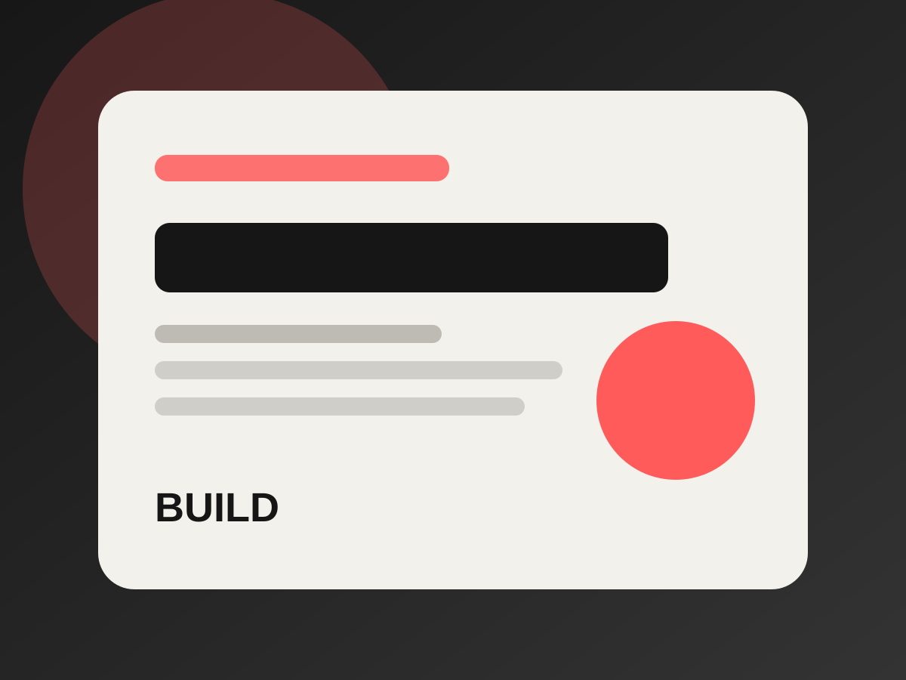
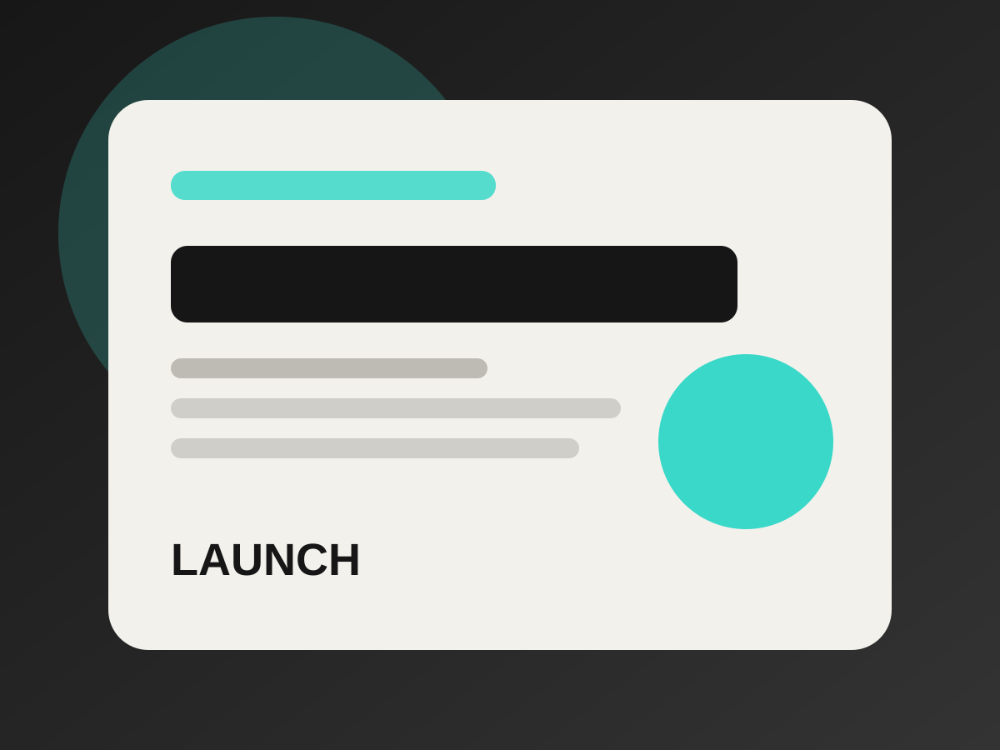

Creative network
One lead designer, with specialist support when the brief needs it.
This is not a page of invented agency employees. I lead the work directly and can coordinate additional support for photography, development, translation or content when that genuinely improves the project.
Core role
Creative direction & WordPress
I remain responsible for the project structure, visual consistency, implementation and client communication.
As needed
Specialist collaboration
Additional expertise can be brought in for tasks that should not be improvised, while keeping the process coordinated.
Always
Clear ownership
You know who is responsible for decisions, delivery and handover at every point in the project.
Why it works
Small enough to stay direct. Flexible enough to solve the real problem.
The goal is not to imitate a large agency. It is to assemble only the skills the project requires and keep communication simple.

Shared brief
Everyone works from one agreed scope and visual direction.

Consistent direction
Additional work supports the same final experience.

Coordinated production
Dependencies and feedback remain visible instead of scattered.

Single handover
Final files and access are organised in one delivery process.
Start a project
Let’s make the next project clearer, stronger and easier to use.
Tell me what you are building and where the current experience falls short.